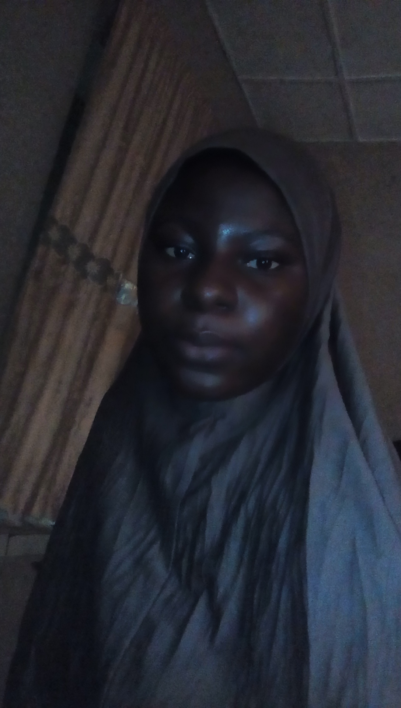

MY ACHIVEMENT
My achievement started when I was in my year seven.though,I saw it as unimaginable.
Arts,writing,drama are familiar things for all of us in the family.The first time I saw a production being done from start to finish was when I
was in JSS.The script was written by my sister who was also in secondary school then.The drama had my brother acting about three or four roles and
my sister as well.I could say all of us were involved.That was my earliest contact with production and my greatest achievement so far because I love
acting.In secondary school, no play came without my being there as an actress,director or driving force.It passed on through secondary school and also now
in the university.
I grew up in the embrace of the arts.I acted all through my school days,wrote stories,choreographed danced and followed groups to places to perform.I was born
for the arts.No one who knew me before my transition in 2014 would deny me of enormous capacity for visioning and building an army of enthusiasts to believe and pursue
lofty dreams with me.
In primary school,I had a role to play in virtually all the drama productions that the school put up.If I was not the driving force,fixing the human and material pegs
into the right holes,I was taking a role on the stage.That was my greatest achievement at All Saints School,now known as Ekulu Primary School in Oluwo.
I came,saw,conquered and impacted.
click on this link for bodyn backgroundclick here
go to homepage